|
|
|
|Instituto Tecnológico de Costa Rica|Escuela de Matemática| M. Sc. Geovanni Figueroa M. |
1 2
3
4 5
6 7
8 9
10 11
12 13
14 15
16
|
|
Función escalón En ingeniería es común encontrar funciones que corresponden a estados de sí o no, o bien activo o inactivo. Por ejemplo, una fuerza externa que actúa sobre un sistema mecánico o una tensión eléctrica aplicada a un circuito, puede tener que suspenderse después de cierto tiempo. Para tratar de forma efectiva con estas funciones discontinuas conviene introducir una función especial llamada función escalón unitario.
Ejemplo
Solución
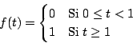
y su gráfica se muestra en la figura 1.5
Figura 1.5
Cuando la función de Heaviside 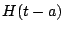 se multilplica por una función
Ejemplo
Solución
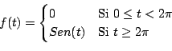
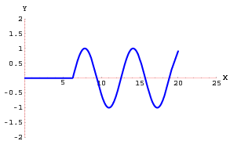
La función de Heaviside puede utilizarse para expresar funciones continuas a trozos de una manera compacta, como se muestra en el siguiente ejemplo.
Ejemplo
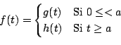
Solución
Observación: la función
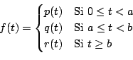
se escribe usando la función de Heaviside como
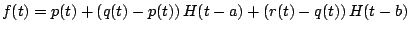
Demostración
En el primer teorema de traslación nos permitío calcular la transformada de una función
Demostración
Observación: podemos usar el segundo teorema de traslación para calcular la transformada de Laplace de la función haciendo 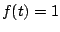:
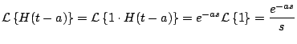
Ejemplo
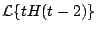
Solución
Ejemplo Calcular
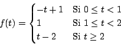
Solución:
Observe que la función
con lo cual
Ejemplo
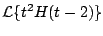
Solución
Como lo muestran los ejemplos anteriores algunas veces es necesario sumar y restar algunos términos con la idea de poder usar el segundo teorema de traslación. Pero existe una forma alternativa que nos evita el tener que hacer esto.
Demostración
Usando la definición
Ejemplo
Solución
Los siguientes ejemplos muestran el uso del segundo teorema de traslación en su forma inversa.
Ejemplo
Solución
En este caso y
con lo cual
Ejemplo
Solución
con lo cual
Ejemplo
Solución
En este punto debemos usar el primer teorema de traslación para calcular cada una de las transformadas inversas de la siguiente forma:
y
Y de aquí
Ejemplo
Solución
Ejemplo
Solución
El siguiente ejemplo muestra una combinación del primer teorema de traslación y el teorema anterior.
Ejemplo
Solución
Ejemplo
Solución
De donde obtenemos que
y tomando
Existe un caso especial del teorema anterior, cuando , que es muy útil en el cálculo de transformadas inversas.
Ejemplo
Solución
por el corolario tenemos que
Demostración
Sea
entonces aplicando transformada de Laplace a ambos lados tenemos que
Integrando
es decir,
Observación: la constante de integración debe escogerse de forma de tal que
El siguiente ejemplo muestra una aplicación de este teorema.
Ejemplo
Solución
Tenemos que con lo cual
Ejemplo
Solución
entonces
De donde
y tomando el límite cuando , tenemos que
|